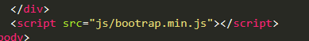

In order to link a website to bootstrap you have to download bootstrap first. Then the second step is to link css and javascript file to the project folder.Like as shown below.

And then to link javascript 
Taking a screen shot in windwos windows +shift + S https://certification.comptia.org › certifications
C:\Users\onesi\AppData\Local\Packages\CanonicalGroupLimited.Ubuntu18.04onWindows_79rhkp1fndgsc\LocalState\rootfs cd /mnt/c to go to c dir namraj@Namraj-4GZ7:/mnt/c/Users/onesi/Documents$